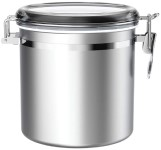
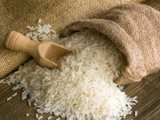
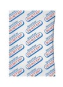

Materials
Instructions
For official government instructions, click here.
For more information about oxygen absorbers, click here.
For more information about food storage, click here.
To purchase long term storage food, click here.

Step 1:
- Prepare container by cleaning with soap and hot water.
- 165 oz capacity.
- Resistant to earthquakes.
- Resistant to rodents and pests.
- Cannot store corrosive materials such as salt.

Step 2:
- Place the food you are storing in the container.
- Examples: rice, beans, pasta, flour etc.

Step 3:
- Place the oxygen absorber in the container.
- Place the appropriate amount of cc for the size of the container.
- About 300-500 cc to 1 gal of stored food.
- Not for use with sugars or salt.
- 1 gal = 128 oz.

Step 4:
- Notate what the food is.
- Notate when the food was stored.
- Research when you should rotate the food.
- Notate when to rotate the food.
- Store in cool dry place.